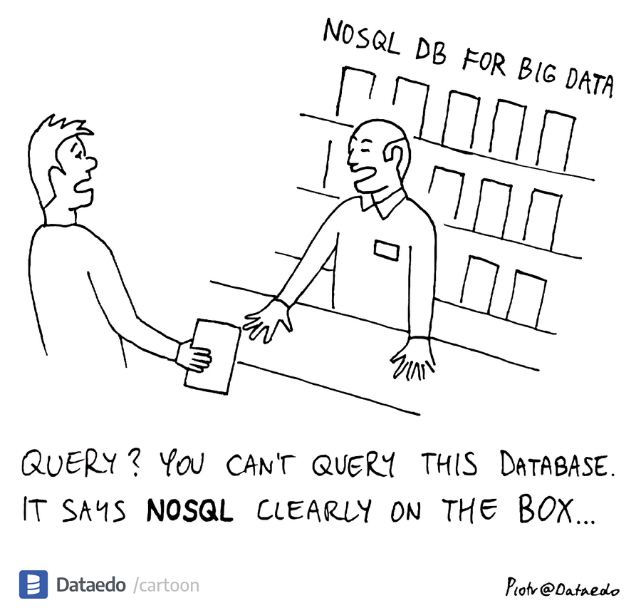

Lecture 8: MQL 1#
Gittu George, January 26, 2023
Attribution: This notebook is developed using materials from DSCI 513 by Arman.
Announcements#
Please make sure you follow the mechanics correctly.
We can’t accept chatGPT responses - this can be a more serious issue as we want assignments to be done by you, not chatGPT.
Read regrade request policy very carefully before submitting. Address to Daniel and cc me too.
There won’t be mongoDB tutorial. But we will have all OHs next week, so please make use of it.
Agenda#
Introduction to NoSQL document database (MongoDB)
Basic queries in MongoDB
Objectives#
Setting up mongoDB instance in cloud
Write basic MQL
MongoDB interfaces#
MongoDB shell (mongosh)#
This is command line interface for interacting with a MongoDB database, similar to psql that we’ve used for Postgres. mongosh is based on the JavaScript language. We will not use mongosh much in this course.
MongoDB Compass#
Compass is a versatile graphical user interface for using MongoDB databases. This is a similar application to pgAdmin that we’ve used for Postgres.
MongoDB’s Python driver (pymongo)#
And finally, pymongo is the official Python driver for MongoDB. If your using the course conda environment, this package is installed and ready to use in Jupyter Lab. You can take a look at pymongos documentation here.
from pymongo import MongoClient
import json
import urllib.parse
with open('credentials_mongodb.json') as f:
login = json.load(f)
username = login['username']
password = urllib.parse.quote(login['password'])
host = login['host']
url = "mongodb+srv://{}:{}@{}/?retryWrites=true&w=majority".format(username, password, host)
client = MongoClient(url)
client.list_database_names()
['mds',
'sample_airbnb',
'sample_analytics',
'sample_geospatial',
'sample_guides',
'sample_mflix',
'sample_restaurants',
'sample_supplies',
'sample_training',
'sample_weatherdata',
'admin',
'local']
MongoDB query language (MQL)#
{kind=link}
See also …
SQL to MongoDB mapping chart: https://docs.mongodb.com/manual/reference/sql-comparison/
As mentioned earlier, there is no standard query language among NoSQL DBMSs. This is because each NoSQL DBMS supports a different data model and obviously no one language can suit all data models.
MongoDB has its own query language known as MongoDB Query Language or MQL (We already saw CQL for neo4j). I will walk you through the usage of MQL in the remainder of this lecture.
Accessing databases and collections#
Here is how we can access databases through different interfaces.
Compass:
It’s just point and click. I’ll demo this in class.

mongosh:
show dbs
use my_db
pymongo:
my_db = client['my_db']
my_db
Running the above cell just gives you some information about our connection to the server. We’ll learn how to run queries on this connection in a bit. For now, let’s see what databases we have:
client.list_database_names()
['mds',
'sample_airbnb',
'sample_analytics',
'sample_geospatial',
'sample_guides',
'sample_mflix',
'sample_restaurants',
'sample_supplies',
'sample_training',
'sample_weatherdata',
'admin',
'local']
To access collections withing each database, use the following syntax:
mongosh:
db.my_collection.method()
pymongo:
my_collection = my_db['my_collection']
my_collection
Again, some information that we don’t need. We will never use the database or collection objects simple like this. For now, let’s take a look at the collections inside the sample_mflix database:
client['sample_mflix'].list_collection_names()
['sessions', 'theaters', 'comments', 'users', 'movies', 'embedded_movies']
Or alternatively:
client.sample_mflix.list_collection_names()
['sessions', 'theaters', 'comments', 'users', 'movies', 'embedded_movies']
A very important thing to know before using MQL is that
Everything in MongoDB is a JSON-like document
even queries themselves!
find#
The main method used for querying documents is the .find() method. Here is an example of a query in MongoDB:
mongosh:
db.movies.find( {title: 'Titanic'} )
pymongo:
client['sample_mflix']['movies'].find( filter={'title': 'Titanic'} )
<pymongo.cursor.Cursor at 0x110bde0f0>
Using filter= is optional in the argument list, but if you remember from Python’s Zen advice, “explicit is better than implicit”.
Well, the above code doesn’t do anything because it returns a cursor object which is basically a Python generator. Let’s return the first element of this generator:
next(client['sample_mflix']['movies'].find( {'title': 'Titanic'} ))
{'_id': ObjectId('573a139af29313caabcefb1d'),
'plot': 'The story of the 1912 sinking of the largest luxury liner ever built, the tragedy that befell over two thousand of the rich and famous as well as of the poor and unknown passengers aboard the doomed ship.',
'genres': ['Action', 'Drama', 'History'],
'runtime': 173,
'cast': ['Peter Gallagher',
'George C. Scott',
'Catherine Zeta-Jones',
'Eva Marie Saint'],
'poster': 'https://m.media-amazon.com/images/M/MV5BYWM0MDE3OWMtMzlhZC00YzMyLThiNjItNzFhNGVhYzQ1YWM5XkEyXkFqcGdeQXVyMTczNjQwOTY@._V1_SY1000_SX677_AL_.jpg',
'title': 'Titanic',
'fullplot': "The plot focuses on the romances of two couples upon the doomed ship's maiden voyage. Isabella Paradine (Catherine Zeta-Jones) is a wealthy woman mourning the loss of her aunt, who reignites a romance with former flame Wynn Park (Peter Gallagher). Meanwhile, a charming ne'er-do-well named Jamie Perse (Mike Doyle) steals a ticket for the ship, and falls for a sweet innocent Irish girl on board. But their romance is threatened by the villainous Simon Doonan (Tim Curry), who has discovered about the ticket and makes Jamie his unwilling accomplice, as well as having sinister plans for the girl.",
'languages': ['English'],
'released': datetime.datetime(1996, 11, 17, 0, 0),
'rated': 'PG-13',
'awards': {'wins': 0,
'nominations': 9,
'text': 'Won 1 Primetime Emmy. Another 8 nominations.'},
'lastupdated': '2015-08-30 00:47:02.163000000',
'year': 1996,
'imdb': {'rating': 5.9, 'votes': 3435, 'id': 115392},
'countries': ['Canada', 'USA'],
'type': 'series',
'tomatoes': {'viewer': {'rating': 3.8, 'numReviews': 30909, 'meter': 71},
'dvd': datetime.datetime(1999, 9, 7, 0, 0),
'production': 'Hallmark Entertainment',
'lastUpdated': datetime.datetime(2015, 8, 15, 18, 12, 51)},
'num_mflix_comments': 0}
Or we can pass it to list() to materialize the generator entirely:
list(
client['sample_mflix']['movies'].find( {'title': 'Titanic'} )
)
[{'_id': ObjectId('573a139af29313caabcefb1d'),
'plot': 'The story of the 1912 sinking of the largest luxury liner ever built, the tragedy that befell over two thousand of the rich and famous as well as of the poor and unknown passengers aboard the doomed ship.',
'genres': ['Action', 'Drama', 'History'],
'runtime': 173,
'cast': ['Peter Gallagher',
'George C. Scott',
'Catherine Zeta-Jones',
'Eva Marie Saint'],
'poster': 'https://m.media-amazon.com/images/M/MV5BYWM0MDE3OWMtMzlhZC00YzMyLThiNjItNzFhNGVhYzQ1YWM5XkEyXkFqcGdeQXVyMTczNjQwOTY@._V1_SY1000_SX677_AL_.jpg',
'title': 'Titanic',
'fullplot': "The plot focuses on the romances of two couples upon the doomed ship's maiden voyage. Isabella Paradine (Catherine Zeta-Jones) is a wealthy woman mourning the loss of her aunt, who reignites a romance with former flame Wynn Park (Peter Gallagher). Meanwhile, a charming ne'er-do-well named Jamie Perse (Mike Doyle) steals a ticket for the ship, and falls for a sweet innocent Irish girl on board. But their romance is threatened by the villainous Simon Doonan (Tim Curry), who has discovered about the ticket and makes Jamie his unwilling accomplice, as well as having sinister plans for the girl.",
'languages': ['English'],
'released': datetime.datetime(1996, 11, 17, 0, 0),
'rated': 'PG-13',
'awards': {'wins': 0,
'nominations': 9,
'text': 'Won 1 Primetime Emmy. Another 8 nominations.'},
'lastupdated': '2015-08-30 00:47:02.163000000',
'year': 1996,
'imdb': {'rating': 5.9, 'votes': 3435, 'id': 115392},
'countries': ['Canada', 'USA'],
'type': 'series',
'tomatoes': {'viewer': {'rating': 3.8, 'numReviews': 30909, 'meter': 71},
'dvd': datetime.datetime(1999, 9, 7, 0, 0),
'production': 'Hallmark Entertainment',
'lastUpdated': datetime.datetime(2015, 8, 15, 18, 12, 51)},
'num_mflix_comments': 0},
{'_id': ObjectId('573a139af29313caabcf0d74'),
'fullplot': '84 years later, a 101-year-old woman named Rose DeWitt Bukater tells the story to her granddaughter Lizzy Calvert, Brock Lovett, Lewis Bodine, Bobby Buell and Anatoly Mikailavich on the Keldysh about her life set in April 10th 1912, on a ship called Titanic when young Rose boards the departing ship with the upper-class passengers and her mother, Ruth DeWitt Bukater, and her fiancè, Caledon Hockley. Meanwhile, a drifter and artist named Jack Dawson and his best friend Fabrizio De Rossi win third-class tickets to the ship in a game. And she explains the whole story from departure until the death of Titanic on its first and last voyage April 15th, 1912 at 2:20 in the morning.',
'imdb': {'rating': 7.7, 'votes': 716392, 'id': 120338},
'year': 1997,
'plot': 'A seventeen-year-old aristocrat falls in love with a kind, but poor artist aboard the luxurious, ill-fated R.M.S. Titanic.',
'genres': ['Drama', 'Romance'],
'rated': 'PG-13',
'metacritic': 74,
'title': 'Titanic',
'lastupdated': '2015-09-13 00:41:42.117000000',
'languages': ['English',
'French',
'German',
'Swedish',
'Italian',
'Russian'],
'writers': ['James Cameron'],
'type': 'movie',
'tomatoes': {'website': 'http://www.titanicmovie.com/',
'viewer': {'rating': 3.3, 'numReviews': 35792304, 'meter': 69},
'dvd': datetime.datetime(2012, 9, 10, 0, 0),
'critic': {'rating': 8.0, 'numReviews': 178, 'meter': 88},
'boxOffice': '$57.9M',
'consensus': 'A mostly unqualified triumph for James Cameron, who offers a dizzying blend of spectacular visuals and old-fashioned melodrama.',
'rotten': 21,
'production': 'Paramount Pictures',
'lastUpdated': datetime.datetime(2015, 9, 13, 17, 5, 18),
'fresh': 157},
'poster': 'https://m.media-amazon.com/images/M/MV5BMDdmZGU3NDQtY2E5My00ZTliLWIzOTUtMTY4ZGI1YjdiNjk3XkEyXkFqcGdeQXVyNTA4NzY1MzY@._V1_SY1000_SX677_AL_.jpg',
'num_mflix_comments': 128,
'released': datetime.datetime(1997, 12, 19, 0, 0),
'awards': {'wins': 127,
'nominations': 63,
'text': 'Won 11 Oscars. Another 116 wins & 63 nominations.'},
'countries': ['USA'],
'cast': ['Leonardo DiCaprio', 'Kate Winslet', 'Billy Zane', 'Kathy Bates'],
'directors': ['James Cameron'],
'runtime': 194}]
Note
.find( filter={} ) or .find() returns every document in the collection.
Note that there is another method .findOne() in mongosh and .find_one() in pymongo. This method returns only one document regardless of how many there are, according to the order in which documents are stored on the physical disk. It can be
projection#
Remember what projection meant in SQL? Returning a particular set of columns among all that exist in a table was called projection (of the results onto particular columns).
Projection has a similar meaning in NoSQL: it means explicitly choosing the fields that we are interested in, instead of all fields that are returned by default. This is done by feeding a list of fields to the projection= argument, as well as a truthy of falsy value that indicates whether or not that field should be included.
For example, here I return the title and year fields only from the document in the result:
mongosh:
db.movies.find( {title: 'Titanic'}, {'title': 1, 'year': 1} )
pymongo:
list(
client['sample_mflix']['movies'].find(
filter={'title': 'Titanic'},
projection={'title': 1, 'year': 1}
)
)
[{'_id': ObjectId('573a139af29313caabcefb1d'),
'title': 'Titanic',
'year': 1996},
{'_id': ObjectId('573a139af29313caabcf0d74'),
'year': 1997,
'title': 'Titanic'}]
Note
In
pymongo, you can useTrueinstead of1andFalseinstead of0.In
pymongo, we need to enclose all field names in single or double quotes (e.g.'title'nottitle), otherwise Python would complain because it doesn’t recognize those names. Inmongosh, this is not necessary.
In the above returned documents, note that the primary key field, namely, the _id field is always returned by default unless you explicitly exclude it using {'_id': 0} or {'_id': False}. This is the only scenario where we might mix up 1s and 0s (or Trues and Falses) in the projection field.
list(
client['sample_mflix']['movies'].find(
filter={'title': 'Titanic'},
projection={'_id': 0, 'title': 1, 'year': 1}
)
)
[{'title': 'Titanic', 'year': 1996}, {'year': 1997, 'title': 'Titanic'}]
sort#
mongosh:
db.movies.find(<filter>, <projection>).sort( {runtime: 1, year:-1} )
pymongo:
list(
client['sample_mflix']['movies'].find(
filter={'title': 'Titanic'},
projection={'_id': 0, 'title': 1, 'year': 1, 'runtime': 1},
sort=[('runtime', 1), ('year', -1)]
)
)
[{'runtime': 173, 'title': 'Titanic', 'year': 1996},
{'year': 1997, 'title': 'Titanic', 'runtime': 194}]
limit#
mongosh:
db.movies.find({}, {title: 1, _id: 0}).limit(5)
pymongo:
list(
client['sample_mflix']['movies'].find(
projection={'title': 1, '_id': 0},
limit=5
)
)
[{'title': 'The Great Train Robbery'},
{'title': 'A Corner in Wheat'},
{'title': 'Winsor McCay, the Famous Cartoonist of the N.Y. Herald and His Moving Comics'},
{'title': 'Traffic in Souls'},
{'title': 'Gertie the Dinosaur'}]
count and count_documents#
mongosh:
db.movies.find({year:2000}).count()
db.movies.countDocuments()
pymongo:
client['sample_mflix']['movies'].count_documents(filter={'year': 2000})
581
skip#
mongosh:
db.movies.find( filter={title: 'Titanic'}, projection={'title': 1, 'year': 1} ).skip(2)
pymongo:
list(
client['sample_mflix']['movies'].find(
filter={'title': 'Titanic'},
projection={'title': 1, 'year': 1},
skip=2
)
)
[]
distinct#
mongosh:
db.movies.distinct( 'title', {title: 'Titanic'} )
pymongo:
list(
client['sample_mflix']['movies'].find(
filter={'title': 'Titanic'},
).distinct('title')
)
['Titanic']
The distinct method here only returns unique values, not entire documents.
Can you?#
list down the benefits of having a document database
Set up MongoDB cloud instance?
Various ways to interact with MongoDB
Do basic MQL query
Class activity#
Note
Check worksheet 8 in canvas for detailed instructions on activity and submission instructions.
Set up MongoDB in the cloud.
Practice MQL.